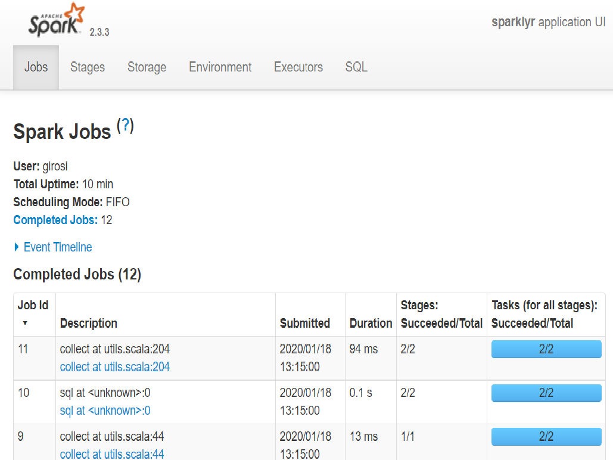
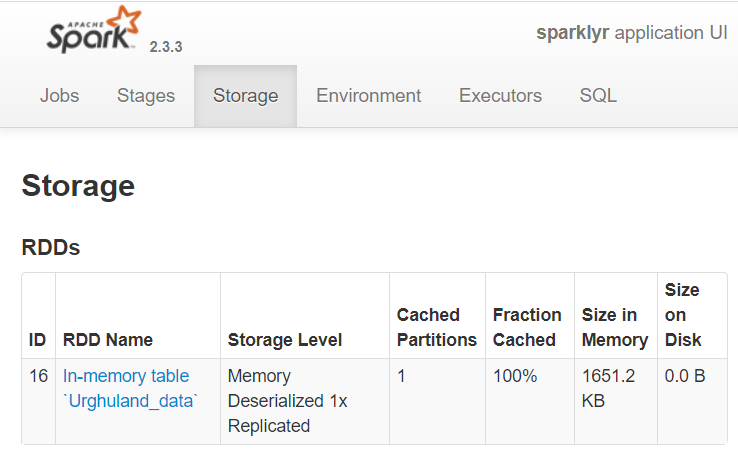

When you work with Spark in R you store the large data sets in Spark resilient distributed dataset (RDD). Once you have uploaded them in the RDD they become a particular type of R object that you can manipulate with some R functions, mostly the ones provided by the dplyr package, the ones used to perform SQL queries (the DBI package) and the ones provided by sparklyr itself. Therefore your R file will usually start with something like this:
Before you can import your files into Spark you need to launch Spark and connect to it. On your laptop this is simply done as follows:
 Typical look of the Spark Web interface.
Once you work with RONIN clusters the value of master will be something else but this will do for now. Once Spark is running it is a good idea to launch the web interface to it. It open in your browser and allows you to monitor what Spark is doing and what tables you have stored in it:
Spark is now ready to ingest a large data set. For the purpose of this blog I am using the file “dataset.csv”, which contains health data the 19 millions adult residents of the fictional country of Urghuland. The file is approximately 4.4Gb in size, it has 10 million rows and 20 columns. It is large but actually not so large that R cannot load it in memory if you give it enough time. Therefore you can use it to compare how long it takes do perform some operations with Spark and in R, and to test what operations are simply not possible in R.
A file this size implies that it may take up to a couple of minutes to load and to perform some of the manipulations presented below. It is good to use it once, to get a sense of computating time, but if you want to play with Spark you can also use a much smaller version of it, named “dataset_small.csv”, that only has 50,000 rows.
The syntax to read a CSV file in Spark is very similar to the standard one:
where sc is the Spark connections and name is the name of the table saved in the Spark database. What is dat as an R object? It is a Spark table, but it is also kind of a tibble as you can see from the class:
## [1] "tbl_spark" "tbl_sql" "tbl_lazy" "tbl"If you just evaluate it it definitely looks like a tibble …
## # Source: spark<Urghuland_data> [?? x 16]
## geo gender age id bmi smoking income education marital_status heart diabetes hypertension stroke cancer gvt_cost cost
## <chr> <chr> <int> <int> <chr> <chr> <chr> <chr> <chr> <int> <int> <int> <int> <int> <dbl> <dbl>
## 1 Chicleros F 46 14605189 Obese Ex-smoker 70K+ University partnered 0 0 1 0 0 2291. 3051.
## 2 Chonssang F 58 16119869 Obese Ex-smoker 70K+ Diploma partnered 0 1 1 0 1 4488. 6130.
## 3 Shapadina F 34 12354526 Normal Current smoker 70K+ University partnered 0 0 0 0 0 412. 470
## 4 Makresane M 24 501855 Obese Never smoked 70K+ University partnered 0 0 0 0 1 956. 1243.
## 5 Saint-Just M 30 2482569 Normal Ex-smoker 70K+ University partnered 0 0 0 0 0 194. 194.
## 6 Jokibir M 33 2368861 Overweight Ex-smoker 70K+ University partnered 0 0 0 0 0 197. 197.
## 7 Theize M 50 5790490 Overweight Never smoked 50K-70K University partnered 0 0 0 0 0 92.2 125.
## 8 Mascapixoy F 35 13130484 Normal Ex-smoker 70K+ Diploma partnered 0 0 0 0 0 73.5 73.5
## 9 Bilaodi F 70 18162248 Obese Current smoker 20K-30K Diploma widowed 0 1 1 0 0 4801. 6057.
## 10 Xingchang F 43 13499362 Normal Current smoker 20K-30K University single 0 0 0 0 0 170. 242.
## # ... with more rows… although if you try some standard tibble operations most of them will not work. However there is other functions you can use to extract the information you want. For example if you want the dimensions, number of rows and columns and column names you can use sdf_dim(), sdf_nrow() and sdf_ncol() and drplyr::tbl_vars()
While many tible commands do not work on Spark tables, ncol() and columnames() actually work!
sparklyr is pretty consistent with its names: operations related to Spark data frames and tables tend to be prefixed with sdf_.
To inspect dat you can use sdf_describe(), that computes count, mean, standard deviation, minimum and maximum for all the columns or a subset of it.
## # Source: spark<?> [?? x 3]
## summary cost gvt_cost
## <chr> <chr> <chr>
## 1 count 10000000 10000000
## 2 mean 1165.2676714337217 959.1724143311733
## 3 stddev 1741.4618549042348 1343.2687143471883
## 4 min 2.4 1.8
## 5 max 152790.15 83078.0 To find more information about dat you can check the Spark web page in the “Storage” tab. That page shows all the RDD tables that Spark is holding. In this case it will show that there is only one data table: “Urghuland_data”.
You can also use the good old tibble::glimpse(), which works on Spark tables:
## Observations: ??
## Variables: 16
## Database: spark_connection
## $ geo <chr> "Chicleros", "Chonssang", "Shapadina", "Makresane", "Saint-Just", "Jokibir", "Theize", "Masc...
## $ gender <chr> "F", "F", "F", "M", "M", "M", "M", "F", "F", "F", "F", "M", "M", "F", "F", "F", "F", "M", "F...
## $ age <int> 46, 58, 34, 24, 30, 33, 50, 35, 70, 43, 74, 52, 50, 44, 79, 56, 44, 37, 21, 58, 43, 38, 30, ...
## $ id <int> 14605189, 16119869, 12354526, 501855, 2482569, 2368861, 5790490, 13130484, 18162248, 1349936...
## $ bmi <chr> "Obese", "Obese", "Normal", "Obese", "Normal", "Overweight", "Overweight", "Normal", "Obese"...
## $ smoking <chr> "Ex-smoker", "Ex-smoker", "Current smoker", "Never smoked", "Ex-smoker", "Ex-smoker", "Never...
## $ income <chr> "70K+", "70K+", "70K+", "70K+", "70K+", "70K+", "50K-70K", "70K+", "20K-30K", "20K-30K", "<2...
## $ education <chr> "University", "Diploma", "University", "University", "University", "University", "University...
## $ marital_status <chr> "partnered", "partnered", "partnered", "partnered", "partnered", "partnered", "partnered", "...
## $ heart <int> 0, 0, 0, 0, 0, 0, 0, 0, 0, 0, 1, 0, 0, 0, 0, 0, 0, 0, 0, 0, 0, 0, 0, 0, 0, 0, 0, 0, 0, 0, 0,...
## $ diabetes <int> 0, 1, 0, 0, 0, 0, 0, 0, 1, 0, 0, 0, 0, 0, 0, 0, 0, 0, 0, 0, 0, 0, 0, 0, 1, 0, 0, 0, 0, 0, 0,...
## $ hypertension <int> 1, 1, 0, 0, 0, 0, 0, 0, 1, 0, 1, 0, 1, 0, 1, 0, 0, 1, 0, 0, 0, 0, 0, 0, 1, 0, 0, 0, 0, 0, 0,...
## $ stroke <int> 0, 0, 0, 0, 0, 0, 0, 0, 0, 0, 0, 0, 0, 0, 0, 0, 0, 0, 0, 0, 0, 0, 0, 0, 0, 0, 0, 0, 0, 0, 0,...
## $ cancer <int> 0, 1, 0, 1, 0, 0, 0, 0, 0, 0, 1, 1, 1, 0, 0, 0, 1, 0, 0, 1, 0, 1, 0, 0, 0, 0, 0, 0, 0, 0, 0,...
## $ gvt_cost <dbl> 2290.70, 4487.85, 412.10, 956.05, 193.55, 197.45, 92.20, 73.50, 4801.30, 170.45, 2113.70, 10...
## $ cost <dbl> 3050.80, 6129.92, 470.00, 1242.75, 193.55, 197.45, 125.15, 73.50, 6056.70, 242.35, 2138.35, ...A useful feature of Rstudio is that when connected to Spark it allows you to preview the Spark tables: simply go under the “Connections” tab and click on the grid-like button to the right of the table you are interested in. In addition, you can always list the content of the Spark database with the function src_tbls():
## [1] "urghuland_data"In order to underscore the distinction between the R object and the Spark table we proceed to remove dat from the workspace:
and notice that the table is still in the Spark database:
## [1] "urghuland_data"where I highlighted the fact that this is a dplyr function, and not a sparklyr function. To recover dat from Spark we simply run the following:
If we wanted remove the table from the database we would have to explicitly run:
Now that we have a data set stored in Spark RDD we can perform some manipulations and basic analyses.
Page built: 2020-01-21